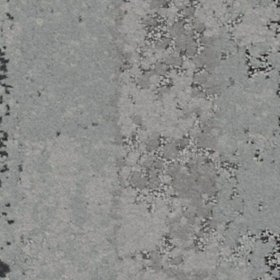
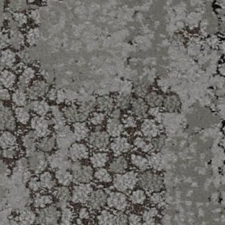

Understanding Dementia-Friendly Environments
Dementia changes how the brain interprets space. Your resident isn't being difficult when they avoid a doorway or hesitate at a threshold—they might genuinely be seeing a hole, or experiencing a visual contrast that feels dangerous. Flooring design sits at the exact intersection where neurology meets safety.
When residents with dementia can't reliably see where they're walking, can't distinguish one room from another, or feel anxious about surfaces they perceive as unstable, the care team ends up managing the fallout. More falls. More wandering. More agitation. More restraint or medication to compensate for an environment that's working against them rather than with them.
Good dementia-friendly flooring design isn't about aesthetics—it's about solving real problems. Clear colour transitions that residents can actually see. Simple, calm surfaces. Finishes that don't lie to aging eyes about where the floor actually is. These aren't nice-to-haves; they're foundational to creating environments where people with dementia can move safely and maintain some autonomy.
This is grounded in extensive research and practice guidance from HammondCare, Dementia Australia, and aged care design standards. But it's also rooted in simple observation: when the environment works, residents do better.
Key Dementia-Friendly Design Principles
These core principles underpin effective dementia-friendly flooring design. Implementing them requires careful material selection, colour specification, and spatial planning.
1. Colour Contrast for Wayfinding and Safety
This is the heavy lifter of dementia-friendly flooring design. Age-related vision loss combines with dementia-related processing difficulties to make standard colour changes nearly invisible. A beige-on-grey colour transition that a sighted staff member wouldn't even notice becomes a genuine hazard for a resident with macular degeneration and cognitive decline.
The solution is unapologetic contrast. Warm-toned carpet in bedrooms. Cool-toned vinyl in activity spaces. Enough visual difference that someone with compromised vision can still read the boundary. We're not talking subtle design here—we're talking wayfinding that actually works.
The technical term is Luminance Contrast Ratio (LCR), and the benchmark is 1:3. That means if one surface is 30 on the luminance scale, the adjacent surface should be at least 90. You can verify this against HB 198:2014 slip resistance guidance, which includes specific recommendations for dementia care. The point: contrast that residents with partial vision loss can actually perceive.
2. Avoiding Busy Patterns and Visual Complexity
Picture a living room with busy floral carpet, patterned curtains, and patterned upholstery. Most people manage this fine. A resident with dementia might experience it as overwhelming visual chaos—their brain can't filter out the irrelevant patterns and focus on what matters (like where the furniture is).
Busy patterns, small geometric repeats, intricate designs, and high-contrast stripes can genuinely make residents anxious and disoriented. So: keep flooring simple. Solid colours. Subtle, large-scale patterns at most. Think calm, not interesting.
This isn't minimalism as an aesthetic choice—it's sensory respect. A warm neutral carpet in a bedroom, soft grey vinyl in activity areas. These provide visual simplicity without looking institutional. They also give the space a sense of calm rather than stimulation.
3. Eliminating Dark Thresholds and Visual Hazards
A dark stripe across a doorway doesn't look like flooring to someone with dementia—it looks like a hole. That's not an exaggeration; that's literally what their visual processing tells them. They freeze, hesitate, or try to step over it. These moments cascade: the resident becomes anxious, potentially refuses to move, and the care team now has a behavioural incident to manage.
Rule: Never use dark flooring as a visual boundary in dementia care. No dark thresholds. No dark stripes. No dark borders that read as hazards. If you need to mark a boundary—say, the edge of a wet area—use warm or cool light tones with clear contrast, paired with subtle tactile cues like bevelled edges.
And while we're at it: skip glossy finishes entirely. Reflective surfaces create glare, distort depth perception, and make residents feel uncertain. Matte finishes are not just better—they're essential.
4. Matte Finishes to Reduce Glare and Disorientation
Walk into a room with glossy vinyl and watch how light bounces off it. Now imagine doing that with cataracts. Or age-related macular degeneration. Or both. That shiny surface becomes a maze of reflections that makes it genuinely hard to see where the floor actually is.
Residents hesitate. They misjudge their footing. They become anxious about surfaces that feel unstable—even though the surface is perfectly stable, the visual information is scrambled. Glare also exacerbates wayfinding problems because the colour information gets lost in reflection.
Solution: specify matte finishes exclusively. Carpet tiles have this built in. For vinyl, ask explicitly for matte or satin finishes—never glossy or semi-glossy. This single specification change improves safety and comfort immediately.
5. Consistent Flooring to Reduce Anxiety
Contrast supports wayfinding. Consistency supports peace of mind. If your resident walks to their bedroom expecting warm carpet and finds themselves on cool vinyl instead, they're disoriented. Again. So: use different flooring types intentionally, not randomly.
The pattern is simple: carpet tiles in bedrooms, bathrooms, and private spaces (warmth, softness, sound absorption). Vinyl in dining, activity areas, and wet zones (easy clean, hygiene, slip resistance). Once residents learn this pattern—and they will, even with dementia, because it's predictable—they navigate more confidently.
Every flooring change should communicate something: "different room, different purpose." Not: "random material switch that happened to be cheaper." Residents with dementia are reading your environmental cues. Make sure they're consistent and clear.
6. Colour as a Language
If a resident with dementia can't remember which room is the dining area, but they can remember "cool colours are where people gather," you've given them a way to find themselves. That's not trivial.
Warm tones (soft beiges, warm greys, gentle terracottas) signal private, intimate spaces. Cool tones (soft blues, pale greens, cool greys) signal shared, social spaces. This isn't arbitrary—there's psychological research suggesting people respond to these associations. But more importantly, it's consistent. It creates a pattern residents can learn and rely on.
A practical example: warm beige carpet in all bedrooms, cool grey-blue vinyl in dining and activity areas, pale neutral vinyl in corridors. Do this consistently across the whole facility, and residents with intact procedural memory—the part of the brain that remembers patterns—will navigate more independently. It's not perfect, but it's a genuine tool.
Material Selection for Dementia-Friendly Environments
Good design principles are useless if the materials don't support them. You need flooring that's actually durable enough for an aged care environment, meets infection control standards, provides proper slip resistance, and comes in the colours you've specified. That narrows things down significantly.
Carpet Tiles for Dementia Spaces


Interface Human Nature and Urban Retreat — warm neutrals with matte finishes, purpose-built for dementia-friendly aged care environments
Bedrooms need warm, soft surfaces. That's where carpet tiles excel. They dampen sound (hard floors echo, which agitates residents), provide underfoot comfort, and reduce injury severity when falls happen. And they will happen.
What Makes Carpet Tiles Right:
- Acoustic Reality: A hollow room with hard flooring amplifies every footstep and conversation. Carpet absorbs that—the space becomes calmer just from the material choice.
- Fall Physics: Carpet doesn't prevent falls, but it absorbs impact. The difference between a soft landing and a hip fracture is often that underfoot.
- Colour Options: Interface Composure, Shaw Synchronize, and similar brands offer extensive warm neutrals (soft beige, warm grey, pale taupe) specifically designed for aged care. You get dementia-friendly colours with decent construction.
- Surgical Replacement: When a tile gets worn or soiled, you replace that tile. Not the whole bedroom. This matters operationally.
- Infection Control: Antimicrobial treatments are available, which meets NSQHS standards and reduces infection risk in high-touch areas.
Specification Strategy: Pick warm neutral tones in matte finish. Avoid patterns. Interface Composure, Shaw Synchronize, or Tarkett in similar colour ranges. Ensure your chosen colour contrasts with the vinyl you've specified for bathrooms and corridors.
Vinyl for Dementia Spaces
Dining areas, bathrooms, corridors—these need seamless vinyl. It cleans easily, handles spills and frequent sanitisation, meets infection control standards, and provides proper slip resistance. The dementia-friendly requirement: specify matte finish and cool tones intentionally.
Why Vinyl for Shared Spaces:
- Seamless = Safe: No seams, no grout lines, no bacterial breeding grounds. NSQHS standards demand harbour-free surfaces. Seamless vinyl delivers this. Your infection control team will thank you.
- Slip Compliance: AS 4586 testing is non-negotiable in aged care. For dementia spaces, you want pendulum slip values (R10 or higher) that support safe movement even if someone's gait is uncertain.
- Cool Colour Language: Vinyl's extensive colour range in cool tones (soft blues, pale greens, cool greys) naturally differentiates shared spaces from private bedroom areas.
- Matte is Mandatory: Glossy vinyl is a dementia care liability. Matte finishes provide visual clarity and prevent glare-induced disorientation.
- Practical Durability: Heavy commercial-grade vinyl withstands the reality of aged care: spills, frequent cleaning, high foot traffic.
Specification Strategy: Polyflor XL™ or Forbo Allura Click in cool, soft tones (grey-blue, pale green, soft grey), matte finish, AS 4586 R10 minimum. Make sure the colour clearly contrasts with your bedroom carpet selection.
This Isn't Just Opinion
Dementia-friendly flooring design isn't aesthetic philosophy—it's grounded in evidence and professional practice standards. Here's what's informing these recommendations:
HB 198:2014 – Australian Handbook on Slip Resistance
Australia's official guidance on slip resistance includes specific sections on dementia-friendly design. It recommends colour contrast (LCR at least 1:3), pattern avoidance, and matte finishes. Everything we've outlined above traces back to this document.
HammondCare Design Guidelines
HammondCare, one of Australia's largest dementia care providers, publishes design standards for dementia-enabling environments. Their guidance on flooring colour, contrast ratios, and glare reduction—informed by decades of dementia care—aligns with our specifications here.
Dementia Australia Resources
Dementia Australia's environmental design resources emphasise that physical spaces affect resident safety, independence, and emotional wellbeing. Flooring design is treated as foundational, not decorative.
Aged Care Quality Standards
The Aged Care Quality Standards prioritise person-centred care and safe environments. Dementia-friendly flooring directly supports these—reducing falls, supporting independent navigation, and creating environments where residents feel secure rather than anxious.
Making It Real: Implementation Steps
Theory is one thing. Actually getting dementia-friendly flooring into a facility is another. Here's a practical roadmap:
Step 1: Zone Your Facility
Walk through with management and identify categories: private rooms (bedrooms, bathrooms), shared areas (dining, lounge, activity rooms), service areas (kitchen, laundry), corridors. Each zone has different requirements. Bedrooms prioritise warmth and sound absorption. Dining areas need easy-clean surfaces and slip resistance. Bathrooms require wet-area performance. Map this out explicitly before you specify anything.
Step 2: Build Your Colour Strategy
This is where you earn your fee. Pick a warm tone for all private spaces (all bedrooms, all bathrooms). Pick a cool tone for all shared spaces. Make sure the contrast is real—not subtle, not "designers will understand." Ensure the LCR is at least 1:3. Test colour samples under the actual lighting conditions in your facility. What looks good in a supplier's showroom might disappear under institutional fluorescent lights.
Step 3: Specify Materials Against Your Strategy
Warm carpet in all bedrooms (Interface, Shaw, Tarkett in your chosen warm tone). Cool vinyl in all dining and activity areas. Neutral or pale vinyl in corridors. Make sure every product is matte finish, meets AS 4586 slip ratings, and comes in the exact colours you've sampled. Don't compromise on finish—glossy compromises the whole design.
Step 4: Install Thoughtfully
After-hours installation minimises disruption. If possible, stage the rollout—complete one wing, observe resident behaviour, refine if needed, then proceed to the next wing. Involve care staff in the observation. They'll notice things you won't. Clean transitions between zones, no tripping hazards, proper sealing on vinyl.
Step 5: Maintain Relentlessly
Here's where many facilities drop the ball. Dirty carpet loses its colour definition. Stained vinyl confuses wayfinding. Damaged tiles create visual chaos and genuine hazards. A maintenance schedule isn't optional. Establish regular cleaning protocols, prompt tile replacement for worn or soiled areas, and quick response to spills. The flooring's dementia-friendly function depends on it looking the way you specified.
What Changes When Flooring Gets It Right
We've implemented dementia-friendly flooring across dozens of aged care facilities. The changes aren't subtle. Here's what actually happens:
- Fall Risk Drops: Clear colour boundaries, no dark thresholds, matte finishes—residents move with more confidence and certainty. Soft carpet underfoot means less injury severity when falls do happen. The combination matters.
- Wayfinding Actually Works: When residents can reliably see where spaces change, they navigate more independently. They're using environmental cues, not just muscle memory or staff guidance. Independence improves.
- Anxiety Noticeably Decreases: Calm, simple surfaces. No visual chaos. Consistent colour language. Care staff consistently report residents are calmer, less agitated, less prone to refusing to move or experiencing anxiety episodes triggered by visual confusion.
- Compliance Becomes Straightforward: Seamless vinyl meets NSQHS standards. Antimicrobial finishes handle infection control. AS 4586 slip ratings are documented. It's easier to pass audit when the floor was designed for compliance from the start.
- Operations Get Simpler: Less resident confusion means fewer behavioural incidents, fewer calls for help, more independent movement. Staff report it's genuinely easier to manage residents in a dementia-friendly environment.
The pattern is consistent across facilities: environments that get flooring right see measurable improvements in resident safety, independence, and emotional wellbeing. And that's not a statistic—that's the point of all this work.
Your Dementia-Friendly Flooring Checklist
Use this checklist to evaluate your current flooring or guide your specification process. If you're ticking boxes on the first section but missing items in the others, you've got partial compliance—not full dementia-friendly design.
Colour & Visual Design:
- Strong colour contrast between private and shared spaces (warm vs. cool)
- LCR of at least 1:3 between all adjacent flooring zones
- Zero busy patterns, busy florals, or small-scale repeats
- No dark thresholds, dark borders, or dark floor colours at transitions
- Calm, simple colour palettes (warm neutrals, cool greys, soft tones)
- Matte finishes exclusively (no glossy, semi-gloss, or shiny surfaces)
Materials & Performance:
- Carpet tiles in bedrooms and private areas (warmth, acoustic, fall cushioning)
- Seamless vinyl in dining, activity, wet areas (infection control, easy clean)
- AS 4586 slip rating on all surfaces (R10 minimum for dementia spaces)
- Antimicrobial treatments on carpet and appropriate vinyl products
- Durable commercial-grade products rated for high-traffic aged care
Installation & Maintenance:
- After-hours or staged installation (minimal disruption to residents)
- Clean, smooth transitions between materials (no tripping hazards)
- Proper sealing and installation for seamless vinyl performance
- Care staff training on environment and maintenance requirements
- Post-installation feedback collection and ongoing maintenance schedule
- Prompt replacement of worn/soiled tiles to maintain visual clarity
Ready to Make It Real?
This isn't theoretical. Your residents are right now navigating environments that either support them or work against them. Dementia-friendly flooring is one of the most direct ways to shift that balance. Premrest specialises in specification and installation that actually delivers on these principles. We've done this across Melbourne, Sydney, and Brisbane—aged care facilities, retirement communities, memory care units.
Let's discuss your facility. Talk through your zones, your residents, your current challenges. We'll assess your space, develop a colour strategy that works in your light conditions, and specify materials that won't compromise on dementia-friendly performance. No guesswork.
Start a ConversationOr call 1300 207 915 for a direct consultation